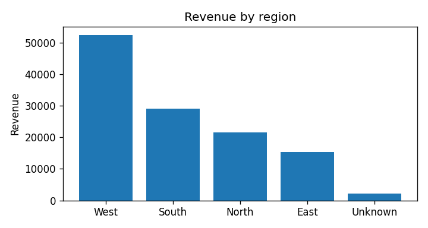
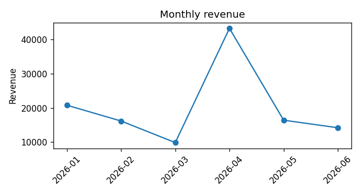

Analytics · automated report
analytics-pipeline
A deliberately messy fictional sales CSV becomes a repeatable KPI report—with every cleaning action and anomaly surfaced for review.
Public · synthetic demoThe problem
A polished chart can still be confidently wrong.
Duplicates, invalid quantities, missing values, and fat-fingered revenue silently distort dashboards. The useful deliverable is a report that shows both the numbers and the reasons a human should question them.
Input
Injected messy rows from the fictional dataset
order_id, order_date, region, product, quantity, unit_price, revenue 10262, 2026-04-05, West, Gadget, 9, 42.00, 25000.00 10141, 2026-04-13, South, Widget, 7, 18.50, 393.50 Raw rows also include exact duplicates, missing regions, non-positive quantities, mixed dates, and missing revenue.
The money shot
Actual committed report output
Total revenue$120,691.08
Clean orders397
Average order$304.01
Unique customers113


| Check | Actual result | Action |
|---|---|---|
| Revenue outlier | Order 10262: $25,000 · z-score 19.29 | Review |
| Revenue ≠ qty × price | 7 rows | Review |
| |MoM change| ≥ 25% | 3 months | Review |
| Exact duplicates | 7 rows | Dropped + logged |
| Missing revenue | 8 rows | Recomputed + logged |
How it's verified
Cleaning and anomaly checks ship with the report.
The pipeline records duplicate removal, invalid-row handling, region normalization, and revenue reconstruction. Tests verify KPI consistency and region shares; deterministic checks identify z-score outliers, arithmetic mismatches, and large monthly swings.
Honest limitations
- All data is fictional; no client data is included.
- The cleaning rules and metrics are readable starting points that must be tuned to a real client's schema and business definitions.
- A flagged outlier is not automatically an error. It remains in the reported total and requires human review.
- The charts describe this fixed synthetic dataset; they are not a claim about future business performance.